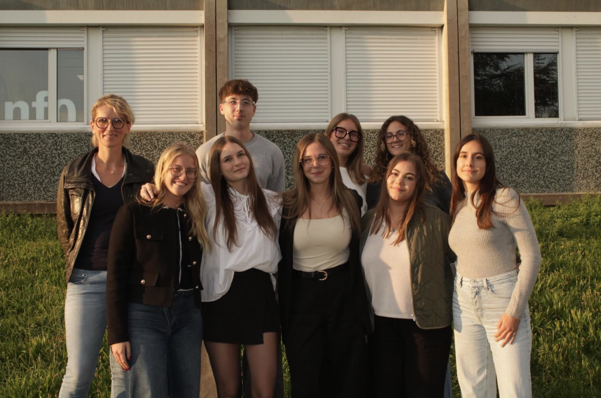
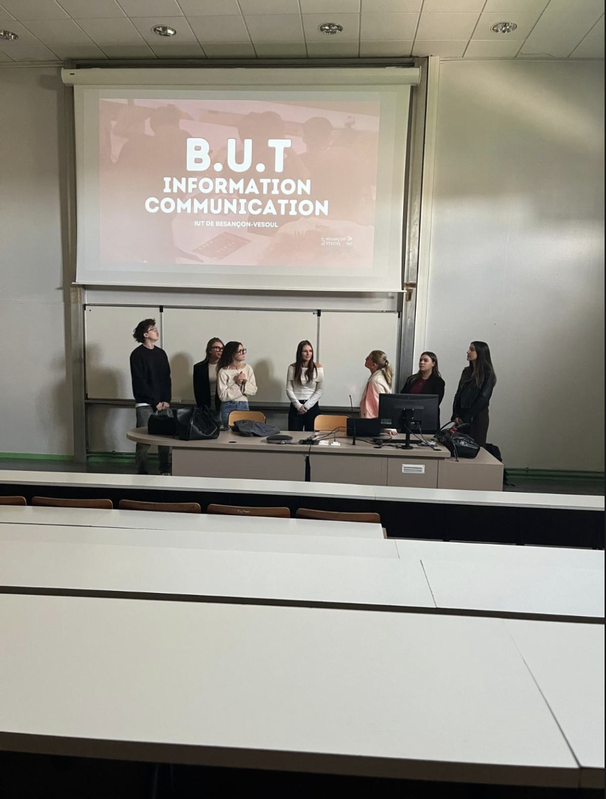
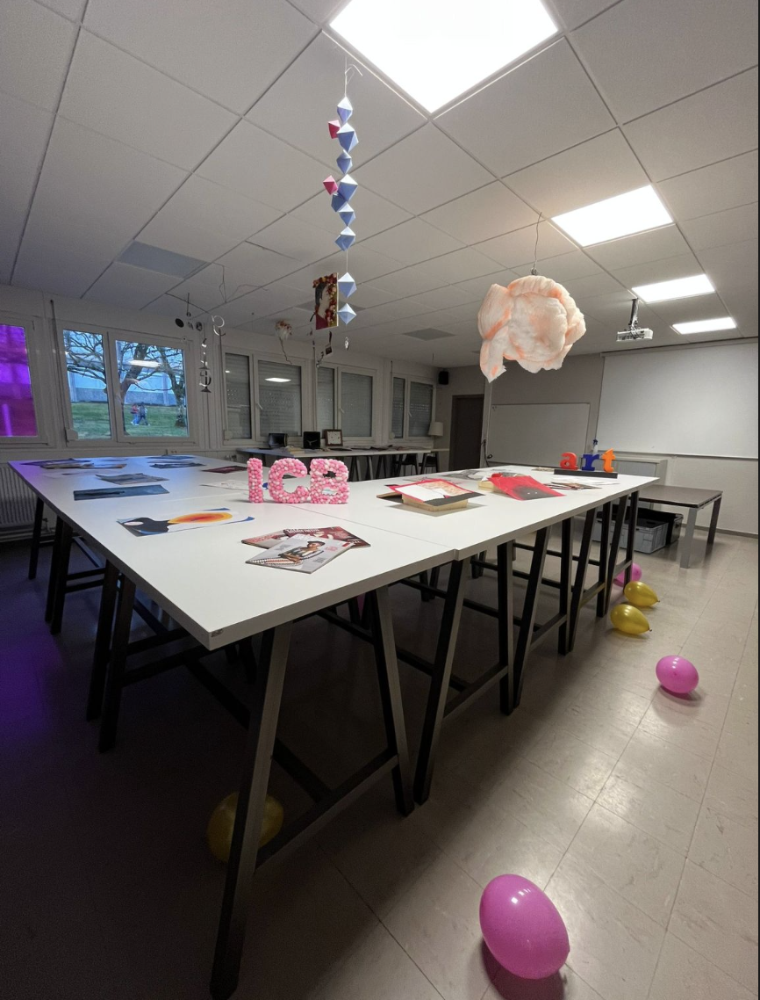

Cette année, j'ai participé à l'organisation de la Journée Portes Ouvertes de la formation au sein d'une équipe de 8 étudiants. Nous avons accueilli 220 visiteurs et préparé plusieurs salles thématiques pour présenter la formation et ses projets.
Le projet ne s'est pas limité à la JPO : salons d'orientation, immersions lycéens et actions de communication tout au long de l'année.

L'équipe organisatrice
La Journée Portes Ouvertes ne se résume pas au seul jour de l'événement. Une grande partie du travail a été réalisée en amont.
- Participation à des salons d'orientation
- Présentations dans les lycées
- Immersions à l'IUT pour faire découvrir la formation

Salon d'orientation

Présentation dans les lycées
L'anticipation et la communication ont été centrales : informer en interne comme en externe, coordonner l'équipe et adapter le message selon les publics.
- Communication interne : réunions, consignes, suivi des tâches
- Communication externe : affiches, digital, salons, supports print
Nous avons construit une identité cohérente pour la JPO : réflexion sur le concept, déclinaison sur les supports, création, tests, puis ajustements jusqu'au rendu final.

Charte et visuels principaux

Goodies

Dépliants informatifs
- Suite Adobe : création des visuels, affiches et supports graphiques
- Google Drive : partage de documents, fichiers et planning
- WhatsApp : coordination rapide de l'équipe
- Rétroplanning : organisation des étapes et respect des délais
En tant que trésorier, j'ai assuré le suivi du budget : devis, dépenses, achats (goodies, matériel) et équilibre des comptes sur la durée du projet.
Ce rôle m'a permis de lier création, logistique et contraintes financières pour tenir un projet global cohérent.
Le jour de la JPO, les salles thématiques ont permis aux visiteurs de découvrir concrètement la formation, ses outils et les réalisations des étudiants.

Notre équipe le Jour J

La salle créa durant la JPO